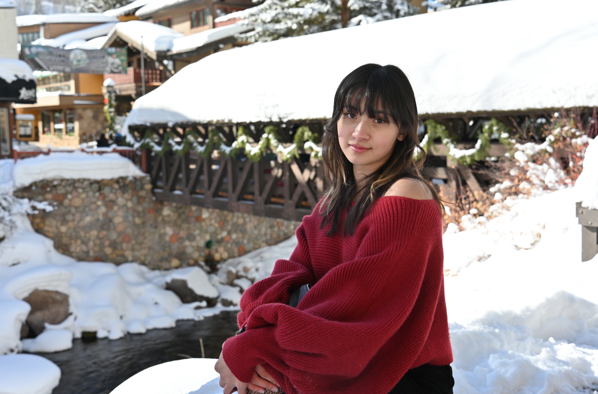

This was taken right before it rained as I was in the Argo Bowl before. Using contrast and colors/values with a bit of balance, I used the rule of thirds to compare life and death. This as a whole representing the transition of life and death and their similarities.

I took this photo in Colorado for an Instagram post as I attempted to follow the rule of thirds and add emphasis to her looks. Utilizing contrast and colors, I used a bright background as a way to highlight her vibrant red sweater and make her stand apart from the snow.